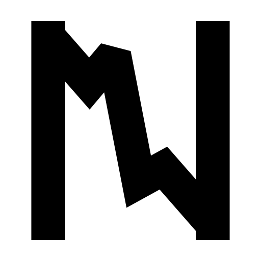

Okuma sırasında kaydedilen non-invaziv EEG sinyalini metne çeviren, donanımdan bağımsız açık yapay zeka altyapısı.
nest-eeg.org · Hasan Tatar · İstanbul Ticaret Üniversitesi
Dünyada yaklaşık 97 milyon kişinin karmaşık iletişim ihtiyacı var: ALS, inme, locked-in, serebral palsi.
Tahmini 8–10 bin ALS hastası; tahmini yılda 125–200 bin inme. Çoğunda okuma ve anlama korunuyor.
Bildiğimiz kadarıyla ameliyat gerektirmeyen, açık sözlüklü ve cihaza bağlı olmayan bir çözümleme katmanı yok.
Kaynaklar: Beukelman & Light 2020; Willett ve ark. 2023; Metzger ve ark. 2023; ALS-MNH Derneği; GBD 2019 (Topçuoğlu 2022).
Kaynaklar: Meta AI, Brain2Qwerty (2025) ve v2 (BCBL, 2026); NewMarketPitch BCI funding trends (2025–2026); InsideBCI, Sabi (16 Nisan 2026).
Wang & Ji (AAAI 2022) BLEU-1 %40, DeWave (NeurIPS 2023) %41. İkisi de değerlendirmede modele doğru önceki kelimeyi veren teacher forcing ile ölçüldü.
Jo ve ark. 2024: gürültü girdisi, gerçek EEG ile aynı skoru alıyor. Temmuz 2026 tekrarı: serbest çözümlemede WER %99'un üzerinde.
Kaynaklar: Wang & Ji, AAAI 2022; Duan ve ark., NeurIPS 2023; Jo ve ark., arXiv 2405.06459 (2024); arXiv 2607.18749 (Temmuz 2026).
| Bileşen | Bugün |
|---|---|
| Kod tabanı | 24.137 satır Python: ön işleme (band-pass, ICA), 6 model mimarisi, eğitim ve değerlendirme betikleri |
| Veri | ZuCo veri hattı kodlandı ve gerçek veriyle çalıştırıldı: 66 GB ham korpus (53 .mat), 12 denek, 105 kanal, 12.071 cümle-denek çifti. Ham veri GPU koşusu öncesi yeniden indirilecek |
| Modeller | NEST v2 CTC 45,3 M parametre · NEST v2 BART 184 M (64,7 M eğitilebilir), oluşturulup doğrulandı |
| Eğitim | v1 modeli 100 epoch, 12.071 örnek, 5,4 saat (M2 dizüstü). Loss düşüyor; WER henüz ölçülmedi |
| Dağıtım | Pruning, quantization, ONNX/TorchScript export ve streaming modülleri yazıldı, henüz ölçülmedi |
Açık kaynak, MIT lisansı. nest-eeg.org yayında. Sayılar 3 Eylül 2026 itibarıyla depodan doğrulandı. ZuCo: Hollenstein ve ark. 2018, CC BY 4.0; ticari kullanıma açık, atıf zorunlu. Lisans: depoda, açık kaynak.
Mimari, gerçek veri hattı, denekten bağımsız bölme ve serbest çözümlemeli değerlendirme kodu. Prototip bu: eğitilebilir sistem, henüz çözülmüş cümle yok. Marka ve site hazır, nest-eeg.org yayında.
v2 modelinin ilk tam eğitimi ve gürültü kontrollü değerlendirme. Bu, bulutta 8–12 saatlik, yaklaşık 20 $'lık bir A100 işi; final öncesinde tamamlamayı hedefliyoruz.
Henüz yok. İlk sayı, protokolüyle birlikte yayınlanacak.
Yok · Almadık · Henüz kurulmadı.
| Segment | Büyüklük | Not |
|---|---|---|
| BCI pazarı (2024–25) | 0,24–2,9 milyar $ | Alt uç yalnız cihaz, üst uç tüm nöroteknoloji; non-invaziv ~%82 |
| AAC cihazları (2025) | 2,3 milyar $ | Yılda %11 büyüme |
| BCI risk sermayesi (2025) | ~1,0 milyar $ | 2024'ün 2,5 katı |
Kaynaklar: Fortune BI, MarketsandMarkets, Grand View, Precedence (2024–25); TBRC (2025); NewMarketPitch (2025); Emotiv fiyat listesi (2026).
Neuralink (656 milyon $, 2025), Synchron (200 milyon $), Precision, Paradromics. Beyin cerrahisi; klinik onay yolu yıllar sürüyor.
Emotiv, OpenBCI, Kernel, Neurable, Cognixion. Cihaz satıyorlar; açık sözlüklü metin çözümleme yok.
Meta Brain2Qwerty (araştırma, ürün değil), Sabi (2026; kendi başlığı, kapalı model). Yalnızca kendi donanımlarında çalışıyor.
NEST. Açık kaynak, dürüst ölçüm taahhüdü, Türkçe korpus planı. Bu kutu bildiğimiz kadarıyla boş; ilk dolduran biz olmayı hedefliyoruz.
Neden ezilmeyiz: Meta ürün yapmıyor, Sabi kendi kapalı donanımına bağlı. Donanım üreticileri kendi çözücülerini yazabilir; cevabımız kopyalanması zaman alan varlıklar: açık benchmark, Türkçe korpus, klinik iş birlikleri. Veri dezavantajımızı da saklamıyoruz: 12 bin çift, Sabi'nin 100 bin saatine karşı.
Kaynaklar: SiliconANGLE (Haziran 2025); BusinessWire (Kasım 2025); şirket ürün sayfaları; InsideBCI (Nisan 2026).
Hasan Tatar
Makine öğrenmesi ve yazılım. İstanbul Ticaret Üniversitesi Bilgisayar Mühendisliği.
IEEE SIU 2026'da yayımlanan çok dilli VLA çalışmasının ilk yazarı (IEEE Xplore 11636432). CamelLayer'ın kurucusu.
[AD SOYAD — doldurulacak]
İstanbul Ticaret Üniversitesi öğretim üyesi.
Sinyal işleme ve derin öğrenme. Etik kurul ve veri toplama protokolünden sorumlu.
[AD SOYAD — doldurulacak]
İstanbul Ticaret Üniversitesi öğretim üyesi.
Nöro-görüntüleme ve deneysel tasarım. Klinik iş birliklerinden sorumlu.
| Dönem | Hedef |
|---|---|
| Çeyrek 1 | v2 modelinin GPU eğitimi; serbest çözümleme ve gürültü kontrolüyle ilk doğrulanmış benchmark; arXiv teknik raporu |
| Çeyrek 2 | Etik kurul onayı ve KVKK uyumu (açık rıza, özel nitelikli veri önlemleri, veri Türkiye'de); Türkçe EEG-okuma korpusu için veri toplama (20 katılımcı; İngilizce şablon protokol Türkçeleştirilip KVKK'ya uyarlanacak); SDK v0.1 |
| Çeyrek 3 | TÜBİTAK 1812 BiGG Yatırım başvurusu (şirketleşmeden önce); onay sonrası Cube kuluçka programıyla şirketleşme; ilk laboratuvar lisansları |
| Çeyrek 4 | Rehabilitasyon merkeziyle pilot anlaşması ve etik başvurusu (pilot Faz 2'de); ilk EEG donanım entegrasyonu denemesi (Emotiv / OpenBCI sınıfı, aktarım ölçülerek) |
Her çeyreğin çıktısı ölçülebilir: benchmark raporu, korpus sürümü, lisans sayısı, pilot protokolü. Karar kapısı Ç1 sonunda: benchmark gürültü tabanını geçmezse Ç2'de okuma yerine iç konuşma paradigmasına ve daha yoğun kayda geçilir; SDK ve korpus işi sürer.
Yatırım turu değil; hibe, hesaplama, kuluçka ve erişim başvurusu.
GPU 2–5 bin $ · veri toplama 50–100 bin TL · hukuk, KVKK, şirketleşme 50–100 bin TL
Benchmark raporu, açık Türkçe korpus, ilk laboratuvar lisansları.
nest-eeg.org · github.com/wazder/nest · Hasan Tatar